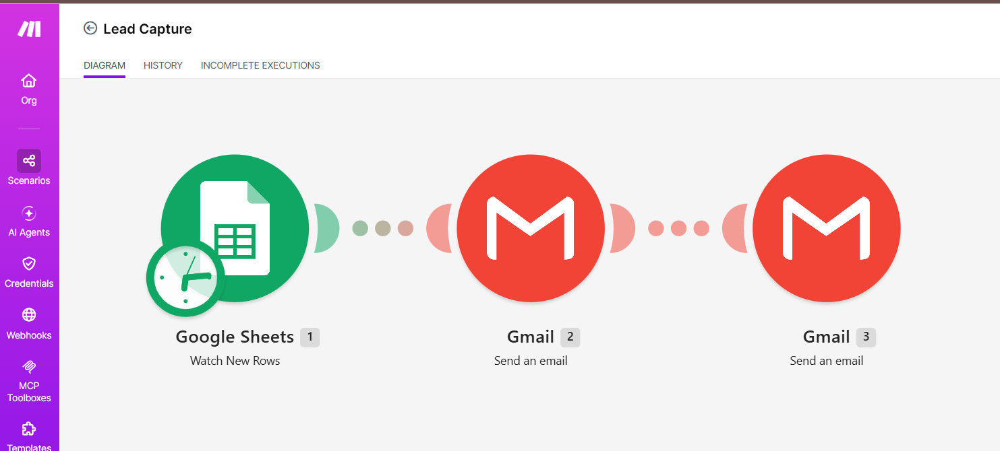

I build simple automations that save small businesses time.
Hi, I'm Roselle Rivera Gerosaga, an AI automation builder with a customer-service background. I turn repetitive tasks, like replying to every new inquiry, into workflows that run on their own.
My first automation, in three steps:
About me
I work as an AI Generative Specialist, and I'm now building my skills in automation so I can help businesses run with fewer manual tasks.
My customer-service experience taught me what customers need: a fast, friendly answer. I design automations with that in mind, so people are never left waiting.
- CurrentlyAI Generative Specialist
- LearningMake.com automation, Google Workspace tools
- Looking forRemote roles in AI and automation
Project: Rose's Catering inquiry handler
A practice project I built for a fictional catering business. It shows how one automation can answer customers and alert the owner without anyone lifting a finger.
The problem
A caterer who gets inquiries through an online form has to notice each one, reply, and keep track. Slow replies lose customers.
How it works
A customer fills in the inquiry form, and the answers are saved as a new row in a Google Sheet.
Make.com checks the sheet every 15 minutes and spots the new row.
Gmail sends the customer an automatic reply confirming their inquiry.
Gmail sends the business owner an alert with the customer's details.

Tools used
- Make.com
- Google Forms
- Google Sheets
- Gmail
The result
I tested it with a real form submission: the row was picked up, the customer received the auto-reply, and the owner received the alert.
Next, I plan to add a follow-up message and a simple status column to track each inquiry.
What I can automate for you
Lead capture
Every form response goes straight into an organized sheet.
Instant replies
Customers get a friendly confirmation the moment they reach out.
Owner alerts
You get notified about each new inquiry, so nothing slips through.
Skills
- Make.com
- Workflow automation
- Google Sheets
- Google Forms
- Gmail
- Generative AI tools
- Customer service
Experience
AI Generative Specialist
Create content and visuals with generative AI tools.
Customer service
Handled customer questions and requests, and learned how to keep people happy and informed.
Let's work together
I'm open to remote roles in AI and automation. The best way to reach me is by email.